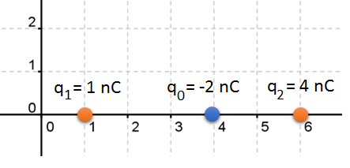
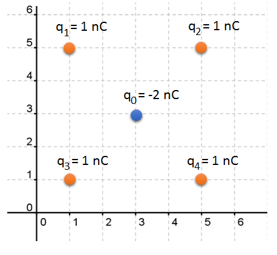

Physics and Astronomy, University of Kent
Classical electromagnetic field theory is a description of the interactions between electrical charges and electrical currents. The theory was well-developed by the end of the nineteenth century, and yet remarkably is consistent with the theory of special relativity. (In fact you will recall from PH321 that it was electromagnetic theory which told us we needed relativity!) Only in the limits of very small distances and low field strengths does the theory begin to break down, in which case we have to turn quantum electrodynamics, a relativistic quantum field theory.
In this part of PH322 you will begin your study of classical electromagnetism. We will study fundamental electrostatics - electric fields generated by non-moving electrical charges - as well as taking a brief look at magnetic fields. You can consider this section of PH322 to be merely the first part of a three-module series (PH322 - PH504 - PH604) which will develop classical electromagnetic field theory much more fully, and give you a good understanding of Maxwell’s equations. These equations completely describe the interactions between electric and magnetic fields, but require mastery of the vector calculus you will learn in PH312, and so will not be discussed at all in PH322.
Electrical charge is a fundamental property of matter. It is has a number of characteristics:
There are two types of charge: positive and negative.
Electrical forces are experienced between electrical charges.
Like charges experience a repulsive force, unlike charges feel an attractive force.
Electrical charge is measured in Coulombs (C). In SI units, 1 C = 1 Ampere-second (As).
Electrical charge is quantised, meaning it comes in discrete chunks. The fundamental or elemental charge, which is also the magnitude of the charge of an electron, is \(1.6~\times~10^{-19}\) C. All electrical charges are integer multiples of the fundamental charge (except for quarks which don’t appear in isolation and so we will ignore!)
Charge is conserved.
Non-examinable Aside: We can distinguish between local and global charge conservation. Global charge conservation says that, if I have a box and the total charge inside is \(Q\) at some point in time, then at some future point, the total charge inside the box is also \(Q\). This doesn’t preclude charge disappearing at one point in the box and instantaneously appearing at another point. In contrast, local charge conservation means that charge does not appear and disappear, it can only flow between different points. In the classical theory of electromagnetism, charge is locally conserved.
As described above, electrical charges experience attractive and repulsive forces. However, we mostly don’t notice these electrical forces. This is because, in most matter, the positive and negative charges are almost exactly balanced. However, we can create slight inbalances in many ways. The classic demonstration is to rub glass on silk. A small number of electrons are transferred from the glass to the silk. Electrons are negatively charged (with a charge of \(-e\) each) and so the glass gains a positive charge and the silk a negative charge. The total charge is unchanged.
The force between two charged particles, with charges \(q_1\) and \(q_2\) and separated by a distance \(r_{12}\), is given by Coulomb’s law. The magnitude of the force, F, is: \[F = \frac{1}{4\pi\epsilon_0}\frac{q_1q_2}{r_{12}^2}\]
where \(\epsilon_0\) (‘epsilon zero’) is the permittivity of free space, sometimes known as the vacuum permittivity or the electric constant, \(\epsilon_0 \approx 8.85 \times 10^{-12}~\mathrm{C^2N^{-1}m^{-2}}\). The constant \(1/(4\pi\epsilon_0)\) is sometimes written as \(k\), and called Coulomb’s constant, \(k \approx 9 \times 10^9~\mathrm{Nm^2C^{-2}}\).
While this provides the magnitude of the force, force is a vector and hence also has a direction.
The vector form of Coulomb’s law is: \[\vec{F}_{12}= \frac{1}{4\pi\epsilon_0}\frac{q_1q_2}{r_{12}^2} \hat{r}_{12}\]
The expression \(\vec{F} _{12}\) means the force exerted by charge 1 on charge 2. Try to memorise which way around this is to avoid notational confusion. Notice that the right hand side now contains a unit vector, \(\hat{r}_{12}\), which points from charge 1 to charge 2. As a unit vector (i.e. a vector of length 1) it has no effect on the magnitude of the force, it just tells us the direction in which the force acts.
We can simplify the equations if we write it in terms of Coulomb’s constant, \(k = 1/(4\pi\epsilon_0)\): \[\vec{F}_{12}= k\frac{q_1q_2}{r_{12}^2} \hat{r}_{12}\]
The unit vector \(\hat{r}_{12}\) is given by \[\vec{r}_{12}= \frac{\vec{r}_{12}}{|r_{12}|}\]
where \(|r_{12}|\) is the length (magnitude) of the vector \(r_{12}\). Another way to write Coulomb’s Law is therefore: \[\vec{F}_{12}= k\frac{q_1q_2}{r_{12}^3} \vec{r}_{12}\]
We can see that the direction also depends on the sign of the charges. If \(q_1\) and \(q_2\) are the same sign (both negative or both positive) then \(q_1q_2\) is positive. So the force on charge 2 points along the direction of charge 1 to charge 2. That is, charge 2 feels a force repelling it from charge 1. On the other hand, if the signs are opposite then \(q_1q_2\) is negative and hence the force is in the opposite direction to the unit vector, i.e. charge 2 feels a force pulling it towards charge 1.
Also notice that it now matters whether we are calculating the force on charge 1 due to charge 2, or the force on charge 2 due to charge 1. While the magnitude of these two forces is the same, the direction is opposite, i.e. \(\vec{F}_{12} = -\vec{F}_{21}\). That is because the unit vectors \(\hat{r}_{12}\) and \(\hat{r}_{21}\) are not the same, they point in opposite directions, \(\hat{r}_{12} = -\hat{r}_{21}\). This makes sense - if we have two particles which are attracted to each other, then the force on the left particle points to the right, and the force on the right particle point to the left.
See Tipler/Mosca Examples 21-2, 21-3
Our study of electrostatics is greatly simplified by the superposition principle. It says that the combined effect of two charges, in terms of the force they exert on a third charge, is simply equal to the sum of the forces each of the two charges individually exert. This makes calculating the effect of multiple charges simple, we just calculate the force due to each charge individually, and add them up. However, we must add them as vectors - we care about the direction!
The total force on a charge \(q_0\) from a collected of \(N\) point charges of charge \(q_i\) is given by: \[\vec{F} = kq_0\sum_{i=1}^{N} \frac{q_i}{r_i^2} \hat{r_i}\]
where \(\hat{r_i}\) is the unit vector pointing from the \(i\)th charge to \(q_0\), and \(r_i\) is the distance between \(q_0\) and the \(i\)th charge.
Note that this is a vector sum. We have to add the components of the vectors to obtain another vector. We cannot simply add the magnitudes of the of the forces. This is easily seen from a simple example: if we have a force of 1 N pushing a charge to the right, and another force of 1 N pushing the charge to the left, the total force is not 2 N but 0 N (the forces are in opposite directions, so they cancel).
Non-examinable Aside - In certain media, known as non-linear media, the superposition principle does not apply for very high electric fields caused by, for example, intense laser light. This leads to a branch of physics called non-linear optics which has lots of useful and interesting applications, and is an active research field, but sadly isn’t a topic for PH322.
Consider two electric charges, \(q_1 = 1~\mathrm{nC}\) and \(q_2 = 4~\mathrm{nC}\), lying on a straight line at distances of 1 m and 6 m from the origin, respectively, as shown in Figure 1.

(a) What is the force experienced by a charge of \(q_0 = -2~\mathrm{nC}\) lying 4 m from the origin?
\[\vec{F} = \frac{kq_1q_0}{r^2_{1,0}}\hat{r}_{1,0} + \frac{kq_2q_0}{r^2_{2,0}}\hat{r}_{2,0}\]
The unit vector from \(q_1\) to \(q_0\), \(\hat{r}_{1,0}\), is along the +ve direction of x-axis, and so \(\hat{r}_{1,0} = \hat{i}\).
The unit vector from \(q_2\) to \(q_0\), \(\hat{r}_{2,0}\), is along the -ve direction of x-axis, and so \(\hat{r}_{1,0} = -\hat{i}\).
\[\begin{aligned} \vec{F} &= \frac{kq_1q_0}{r^2_{1,0}}\hat{i} - \frac{kq_2q_0}{r^2_{2,0}}\hat{i} \\ &= (9\times10^9~\mathrm{kgm^3s^{-2}C^{-2}}) \bigg(\frac{(1~\mathrm{nC})(-2~\mathrm{nC})}{(3~\mathrm{m}^2)} - \frac{(4~\mathrm{nC})(-2~\mathrm{nC})}{(2~\mathrm{m})^2}\bigg)\hat{i} \\ &= 1.6 \times 10^{-8}\hat{i}~\mathrm{N} \end{aligned}\] Note that the force is along the +ve direction. (b) Where should \(q_0\) be placed so that there is no net force? We can see that this position will be somewhere inbetween \(q_1\) and \(q_2\). \[\begin{aligned} \vec{F} &= \frac{kq_1q_0}{r^2_{1,0}}\hat{i} - \frac{kq_2q_0}{r^2_{2,0}}\hat{i} \\ 0 &= \frac{(1~\mathrm{nC})(-2~\mathrm{nC})}{(r_1-r_0)^2} - \frac{(4~\mathrm{nC})(-2~\mathrm{nC})}{(r_2-r_0)^2} \\ \frac{1}{[(1~\mathrm{m})-r_0]^2} &= \frac{4}{[(6~\mathrm{m})-r_0]^2} \\ % \end{aligned}\]
Solving this quadratic gives \(r_0 = 8/3~\mathrm{m}\). There is another mathematical solution at \(r_0 = -4~\mathrm{m}\) (i.e. another point where \(|F_{20}| = |F_{10}|\)), but there the two forces are in the same direction and so they don’t cancel.
Another way to see the answer is to note that force goes with \(1/r^2\) but linearly with \(q\). Since \(q_2\) is four times greater than \(q_1\), \(q_1\) need to be \(\sqrt{4} = 2\) times closer to balance this out. So, we have: \[\begin{aligned} \frac{r_2 - r_0}{r_0 - r_1} &= 2 \\ r_0 &= 3/8~\mathrm{m} % \end{aligned}\]
Five charges are arranged as shown in Figure 2. What is the force on \(q_0\)?

The total force is given by: \[\vec{F}_T = \vec{F}_{1,0} + \vec{F}_{2,0} + \vec{F}_{3,0} + \vec{F}_{4,0}\]
However, notice that \(\hat{r}_{1,0} = -\hat{r}_{4,0}\) and so \(\vec{F}_{1,0} = -\vec{F}_{4,0}\). Similarly, \(\vec{F}_{2,0} = -\vec{F}_{3,0}\). And so: \[\begin{aligned} \vec{F}_T = -\vec{F}_{4,0} -\vec{F}_{3,0} + \vec{F}_{3,0} + \vec{F}_{4,0} = 0 \end{aligned}\] And so the net force is zero. In fact this is obvious from the symmetry of the problem.
Charge 1, \(q_1 = 3\) nC, lies
at point (3,4) m and charge, \(q_2 =
-2\) nC, lies at point (6,2) m. What is the force on charge 2 due
to charge 1?
First write down the vector pointing from charge 1 to charge 2: \[\begin{aligned}
\vec{r}_{12} = (6-3)\hat{i}~\mathrm{m} + (2-4)\hat{j}~\mathrm{m} =
(3\hat{i} -2\hat{j})~\mathrm{m}
\end{aligned}\]
The magnitude of this vector is: \[|\vec{r}_{12}| = \sqrt{(3~\mathrm{m})^2 + (2~\mathrm{m})^2} = \sqrt{13} ~\mathrm{m}\]
And so the unit vector is: \[\begin{aligned} |\hat{r}_{12}| &= \frac{ \vec{r}_{12}^2 } { |\vec{r}_{12}| } ~\mathrm{m} \\ &= \frac{ 3\hat{i} -2\hat{j} }{\sqrt{13}} ~\mathrm{m} \end{aligned}\]
We can then calculate the force: \[\begin{aligned} \vec{F}_{12} &= k\frac{q_1q_2}{|\vec{r}_{12}^2|} \hat{r}_{12} \\ &= (9\times10^9)\frac{(3\times10^{-9})(-2\times10^{-9})}{|\vec{r}_{12}|^2} \hat{r}_{12}~\mathrm{N} \\ &= \frac{(-5.4 \times 10^{-8})}{(13)^{3/2}} (3\hat{i} - 2 \hat{j})~\mathrm{N} \\ &= (-3.5 \hat{i} + 2.3 \hat{j}) \times 10^{-9}~\mathrm{N} \end{aligned}\]
Also see Tipler/Mosca Examples 21-4, 21-5.